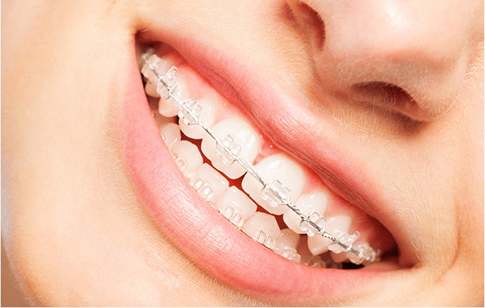

Blog
Learn about the latest treatments, newest services, and best deals for your dental needs. See also the most relevant news in dental care and read on for our team's great achievements.
Cleaning For Your Ceramic Braces

Braces are one of the top dental procedures when it comes to straightening misaligned bites, eliminating gaps between pearly whites, and helping achieve a more aesthetically pleasing smile. One of the most common types is traditional braces. These are made of gray or metallic silver brackets and wires. It also uses different colors of rubber - making it more noticeable in one's teeth. Meanwhile, ceramic braces are also getting more popular in the Philippines as they also g ive the benefits of conventional braces but with a more discrete look. It is made of high-grade polycrystalline ceramic that blends into the color of the teeth. However, these ceramic braces and clear elastics are highly susceptible to color degradation.
To feel confident while wearing ceramic braces, you should maintain it clean and white just like your teeth. But with the implemented community quarantine due to the COVID-19 threat, visiting a dentist to regularly clean and adjust your braces is challenging. Many clinics are closed due to the issued social distancing guidelines and lockdown policies. To help you in cleaning and maintaining the integrity of your braces even at home, here are the following tips that you can practice:
- Regularly brush your teeth.
This is a no-brainer but a crucial move not only to keep your braces at its best but also to maintain your oral cavity's good health. Gently brush your teeth with a soft-bristled toothbrush every after a meal instead of just twice a day to prevent bacteria from building up and developing into hard-to-remove plaque. Avoid using whitening toothpaste as these usually contain strong chemicals and abrasive ingredients that may stain and damage your ceramic braces. Ask your dentist for recommendation too.
- Floss and rinse.
Study shows that brushing can only remove about 25% of bacteria, sugar and acids in your oral cavity. There are many hard-to-reach areas and that's why flossing and rinsing with mouthwash are important. Flossing rubs off the plaque stuck between your teeth and your ceramic braces. Meanwhile, using a mouthwash flushes out stain-causing bacteria and reduces the risk of gingivitis, keeping your ceramic braces white, and your gums healthy for faster orthodontic treatment.
- Be mindful of your diet.
Common dental braces staining agents are found in coffee, tea, hot chocolate, red foods, and curry dishes. As per dentists in the Philippines, these acidic flavor stains stick to your ceramic braces even longer and are difficult to remove especially when you consume them regularly. To prevent this, curb your consumption so you do not have to forego you favorite food and beverages altogether. It is also best to quit smoking as your teeth are compromised when in braces, and smoking or chewing tobacco only compromises them further. Nicotine also stains teeth and braces badly. Start cutting down and then quitting altogether for your ceramic braces not to go to waste.
- Continue to consult your dentist.
Amid quarantine, dentists in the Philippines still carry out online consultation to help their patients care for their ceramic braces even at home. Don't be shy to ask your dentist for recommendations especially when oral cavity problems arise. Some are even willing to schedule appointments and open their clinics for their patients in need. Make sure you have your dentist's contact number with you. Remember, professionals know best when it comes to ceramic braces and oral health maintenance.
LOCATION
Our clinic is located infront of Dapitan City Hall beside Zen Hotpack
Contact Us
Consult with our team online by filling out the form below. If you have specific inquiries regarding our services, please don't hesitate to get in touch. We will respond as soon as possible.